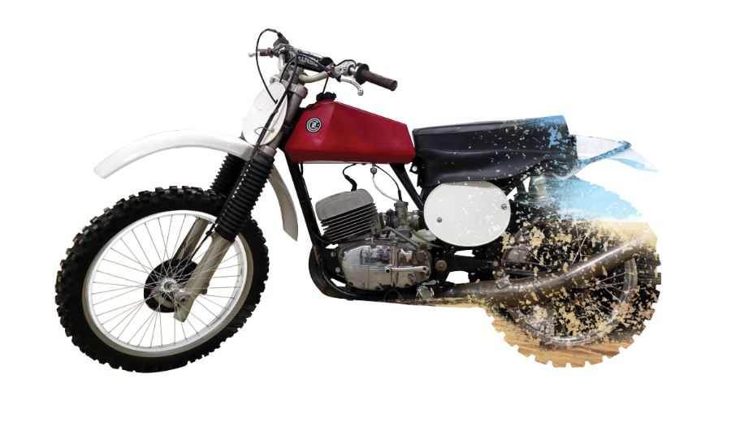

<<<<<<< HEAD
=======
>>>>>>> be39e6060f641706c90b98a4069e6ec6b20d0df6
=======
>>>>>>> be39e6060f641706c90b98a4069e6ec6b20d0df6
Step 1
I began by taking a side-angle photo of my father's motorcycle. Behind it, I added makeshift white cloth to (hopefully) make the photoshop process easier.
Step 2
I carefully cut it out with the pen tool.
(cloth did not help)
Step 3
I experimented with backgrounds to see what type of design I wanted.
<<<<<<< HEAD  ======= >>>>>>> be39e6060f641706c90b98a4069e6ec6b20d0df6
>>>>>>> be39e6060f641706c90b98a4069e6ec6b20d0df6
An early version.
<<<<<<< HEAD
Final Product